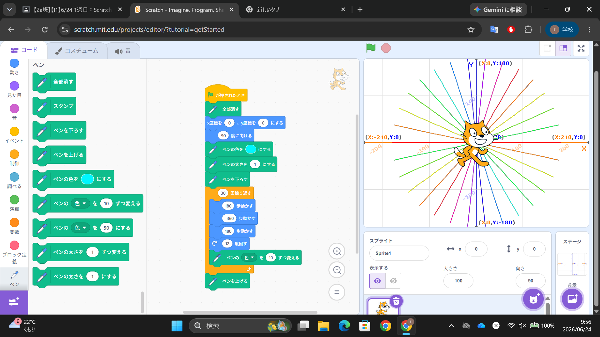

1-1 サイエンスアート

1.内容
スクラッチを使用して、猫にペンを持たせて、その猫の座標や角度を設定して動かすことによりデジタルアートを作成した。また、角度や歩数を調整することにより、直線だけの図形やきれいな円を作成した。その他にも色を変更することにより、より鮮やかな図形を作成することができた。
2.感想
スクラッチは小学生の頃に少しだけ触ったことがあったので、まあ大丈夫だろうと思っていましたがいざ実際に触ってみると思っていたよりも難しかったのでレジュメをしっかりと読んで何とかやり切りました。まだ初歩的なことですが頑張っていきたいです。